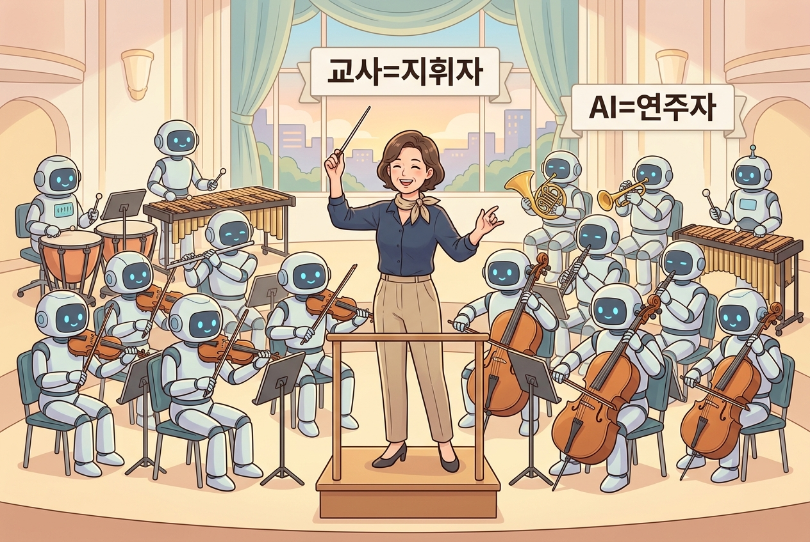

🎯 이 장에서 배우는 것¶
- 에듀플로가 탄생하게 된 배경과 철학을 이해할 수 있다
- '교사가 창작자, AI는 도구'라는 핵심 원칙을 설명할 수 있다
- 오늘 실습에서 무엇을 만들게 될지 기대감을 가질 수 있다
💡 왜 이걸 배우나요?¶
1~2차시에서 AI의 가능성과 함께 "결국 교사의 교육적 판단이 핵심"이라는 것을 확인했습니다. 그렇다면 그 철학을 실제로 구현한 도구는 어떤 모습일까요? 한 현장 교사의 고민이 어떻게 해결책이 되었는지, 그 여정을 따라가 봅니다.
📚 핵심 개념¶
개념: 교사 주권(Teacher Sovereignty) 🏫¶
1. 비유로 시작
"AI 도구를 쓰는 건 마치 요리사가 최첨단 오븐을 쓰는 것과 같습니다. 오븐이 아무리 좋아도 메뉴를 정하고, 재료를 고르고, 간을 보는 건 요리사의 몫이죠."
2. 정확한 정의
교사 주권이란, AI가 수업을 대신 설계하는 것이 아니라 교사가 교육 목표·내용·방법의 결정권을 유지하면서 AI를 보조 도구로 활용하는 원칙입니다.
3. 예시로 확인
| 구분 | AI에게 맡기는 것 | 교사가 지키는 것 |
|---|---|---|
| 📝 | 초안 생성, 문항 변환 | 학습 목표 설정, 난이도 조정 |
| 🎨 | 이미지·레이아웃 제안 | 우리 반 맥락에 맞는 최종 선택 |
| 📊 | 데이터 정리, 패턴 분석 | 학생 피드백의 해석과 판단 |

📖 한 교사의 여정 — 에듀플로는 왜 만들어졌나¶
석리송 선생님은 수업 자료를 만들 때마다 이런 고민을 했습니다.
"ChatGPT로 활동지 초안을 뽑으면 빠르긴 한데… 매번 프롬프트를 새로 쓰고, 결과물을 한글 파일로 옮기고, 디자인을 다듬는 데 또 시간이 걸리네."
기존 방식의 문제를 정리하면 이렇습니다:
에듀플로는 이 끊어진 과정을 하나로 연결하되, 모든 단계에서 교사가 직접 판단하고 수정할 수 있도록 설계되었습니다.
💬 핵심 한 줄: 에듀플로의 철학은 간단합니다. "AI는 초안을, 교사는 결정을."
🔨 따라하기 / 활동¶
Step 1: 내 수업에서 AI에게 맡길 것 vs 내가 지킬 것 구분하기¶
지금 가르치고 계신 한 단원을 떠올려 보세요. 아래 표를 머릿속으로(또는 메모장에) 채워 봅니다.
| AI에게 맡기고 싶은 일 | 반드시 내가 판단해야 할 일 |
|---|---|
| 예) 읽기 지문 요약본 생성 | 예) 우리 반 수준에 맞는 어휘 선택 |
| _____ | _____ |
Step 2: 2부 실습 미리 상상하기¶
🔜 다음 차시(4차시)부터는 에듀플로에 직접 접속하여 5분 만에 활동지 한 장을 만들어 봅니다. 지금 구분한 "AI에게 맡길 일"이 실제로 어떻게 자동화되는지 확인하게 됩니다!
⚠️ 주의할 점¶
- "AI가 만든 것 = 완성품"이 아닙니다. AI 결과물은 항상 교사의 검토와 맥락 조정이 필요합니다.
- 도구에 철학을 맞추지 마세요. 내 수업 철학에 도구를 맞추는 것이 올바른 순서입니다.
✅ 점검하기¶
- 에듀플로가 탄생하게 된 가장 핵심적인 이유는 무엇인가요?
정답 확인
AI로 수업 자료를 만드는 과정이 여전히 번거롭고 끊어져 있었기 때문입니다. 프롬프트 작성 → 복사 → 편집 → 공유의 반복을 하나로 연결하면서도, 교사의 결정권을 유지하려는 필요에서 탄생했습니다.- '교사 주권'을 요리에 비유하면 어떻게 설명할 수 있나요?
정답 확인
AI는 최첨단 오븐(도구)이고, 메뉴 선정·재료 선택·간 맞추기는 요리사(교사)의 몫입니다. 도구가 아무리 좋아도 최종 판단은 교사가 합니다.- 에듀플로의 핵심 철학을 한 문장으로 요약하면?
정답 확인
"AI는 초안을, 교사는 결정을." — 교사가 창작자이고 AI는 보조 도구라는 원칙입니다.📝 인터랙티브 퀴즈¶
1. 에듀플로에서 AI의 역할로 가장 적절한 것은?
2. 기존 AI 활용 방식의 문제점이 아닌 것은?
3. '교사 주권'의 의미로 가장 적절한 것은?
✍️ 서술형 문제¶
Q. 선생님이 현재 가르치시는 과목에서, AI에게 맡기고 싶은 일 1가지와 반드시 직접 판단해야 할 일 1가지를 각각 쓰고, 그 이유를 간단히 설명해 보세요.
⏱️ 이 차시 학습 흐름 (5분)¶
| 단계 | 시간 | 내용 |
|---|---|---|
| 도입 | 1분 | 왜 이걸 배우나요? + 핵심 개념 비유 |
| 전개 | 2분 | 에듀플로 탄생 배경 스토리텔링 |
| 활동 | 1분 | AI에게 맡길 것 vs 내가 지킬 것 구분 |
| 정리 | 1분 | 점검 + 다음 차시 미리보기 |
🔗 다음 장 미리보기¶
4차시: 에듀플로 첫 만남 — 회원가입부터 첫 활동지까지 🚀
드디어 직접 만들어 봅니다! 에듀플로에 접속하여 학습 목표를 입력하고, AI가 생성한 초안을 수정해서 나만의 활동지 1장을 완성합니다. 오늘 구분해 본 "AI에게 맡길 일"이 실제로 어떻게 작동하는지 눈으로 확인하게 됩니다.